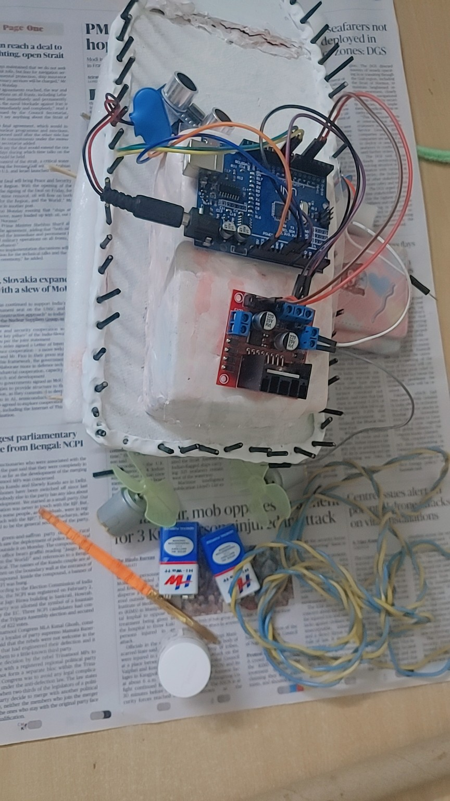

A small model.
A big safety idea.
Our project demonstrates the basic idea behind obstacle-aware maritime movement: detect what is nearby, process the information and respond in time.
What our model demonstrates
The physical model is an educational prototype. It helps explain how a sensor, a microcontroller and electronic control components can work together. It is not a certified navigation or ship-control system.

Our actual student-built prototype, presented by 11th Science, MEASI.
From sensing to response.
The principle is simple: information is useful only when it helps people make a safer decision.
Sense
A sensor detects an object within its working range in the model demonstration.
Process
The Arduino receives the sensor input and follows its programmed logic.
Alert
The system can provide a warning or signal when an obstacle is detected.
Respond
A model response can be demonstrated. A real ship would require validated controls and crew oversight.
Try a simplified simulation
This animation is an illustration of the detection-and-warning concept. It is not a live reading from your physical model.
- The ship approaches a marked obstacle.
- A detection warning appears.
- The demonstration shows why early warning matters.
Where could this idea be used?
India has a long coastline, major commercial ports and busy coastal routes. A professionally engineered version of this concept could be adapted for different maritime settings after extensive testing and certification.
These are examples of Indian maritime locations where collision-risk reduction is relevant—not claims that this student prototype is installed or approved at these ports.
The benefits reach beyond the vessel.
When collision risks are better detected and managed, the potential gains can extend to people, businesses and the marine environment.
Human safety
Earlier warnings can give crews more time to assess a developing risk and make a safe decision.
Environmental protection
Reducing collision risk can also reduce the chance of pollution incidents involving fuel or cargo.
Cargo and asset protection
Preventing accidents can help avoid damage, delays, repair costs and cargo losses.
Better situational awareness
Sensor-based information can support the crew's understanding of nearby obstacles.
More time to react
Useful early alerts may create extra time to evaluate options instead of reacting at the last moment.
Adaptable concept
The core idea can be developed for different vessel types, with equipment suited to each environment.
What are the limitations?
Good engineering does not hide limitations. It identifies them and plans how to address them.
Challenges to solve before real ship deployment
A student prototype has a limited sensing range and is not designed for the changing conditions of the open sea. A full-scale system would need marine-grade sensors, reliable power and communications, resistance to saltwater and vibration, careful testing in different weather and visibility conditions, and compliance with maritime regulations. False alarms and missed detections must also be evaluated. The system should support trained crew—not replace the captain's judgement.
One idea. Two stages of possibility.
Switch between what our model demonstrates today and what a professionally engineered maritime system could aim to do in the future.
What our prototype demonstrates
A sensor detects an obstacle within its working range. The Arduino processes the input and the model demonstrates a warning or response. This is an educational demonstration, not a system ready to steer a real vessel.
Why is early obstacle detection valuable for a ship?
A few things worth knowing.
Is this exact prototype ready to be installed on a real ship?
No. It is a student educational prototype that demonstrates the basic sensing-and-response concept. Real ship deployment would require marine-grade equipment, extensive testing, certification and regulatory approval.
Would this technology replace the captain?
No. A full-scale system should support the crew with timely information and warnings. Navigation decisions and responsibility must remain with qualified personnel.
Where in India could a future system be useful?
Potential settings include busy port approaches, coastal shipping routes, cargo vessels and passenger vessels. These are possible applications, not claims of current installation.
What is the biggest challenge before real-world use?
Reliability. Sensors and software must perform safely despite changing weather, visibility, waves, vibration, saltwater exposure and complex traffic conditions.
From classroom prototype to safer maritime technology.
Future development could explore longer-range marine radar, AIS data, cameras, sensor fusion, intelligent risk assessment and carefully validated decision-support tools. Each step would require expert engineering, sea trials, regulatory approval and human supervision. Our prototype is a first step in understanding that journey.
The best collision is the one that never happens.
Safer journeys begin with better awareness.